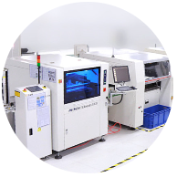
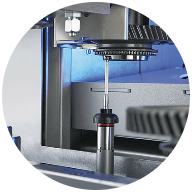

뛰어난 가성비
높은 품질 유지, 가격 경쟁력
뛰어난 역동성
높은 정밀도, 하중 능력
뛰어난 유연성
큰 중공홀과 다양한 취부성
뛰어난 대응성
신속한 유연한 서비스

Intelligent production
CNC장비와 전문 측정기기를 통한 효율성 향상, 비용 절감, 품질 개선, 생산 유연성 확보

Product Quality
동력전달 분야에서 오랜 경험을 바탕으로 혁신적이고 지속적인 품질 향상을 추구
R & D
글로벌 시장에서 기술과 품질을 강화하고 미래 기술 경쟁력을 확보하기 위해 지속적으로 연구 개발에 투자
할로우 로터리
중공축(Hollow Shaft) 구조로 배선·배관을 축 내부로 통과시킬 수 있어, 설치 공간이 제한적인 로봇 관절·회전 구동부에 적합합니다.
Hypoid Gear형
GSH GSR
GSR GSHR
GSHR
하이포이드 기어 구조로 직각 방향 동력 전달에 적합하며, 중공축을 통해 케이블을 내부로 배선할 수 있는 컴팩트한 구조입니다.
Helical Gear형
GSN GSB
GSB GSG
GSG GN
GN
헬리컬 기어 구조로 치합이 점진적으로 이루어져 저소음·저진동 운전이 가능하며, 중공축 구조를 유지합니다.
롤러캠 · RV · 정밀웜형
GYH GBX
GBX GR
GR
롤러캠기어 · RV사이클로이드 · 정밀웜 구조를 적용해 고강성을 확보한 형식으로, 정밀한 회전 구동이 요구되는 설비에 적용됩니다.
할로우 로터리 시리즈
정밀 유성감속기
유성기어(Planetary Gear) 구조로 높은 감속비를 콤팩트한 크기에 구현하며, 출력축 배치 방식에 따라 두 가지 형식으로 나뉩니다.
동축형
GPB GPD
GPD GPV
GPV GPE
GPE GPF
GPF GPL
GPL
입력축과 출력축이 동일선상에 위치하는 동축(Inline) 구조로, 서보모터와 직결해 설치 공간을 최소화할 수 있습니다.
앵글형
GPBR GPDR
GPDR GPVR
GPVR GPER
GPER GPFR
GPFR GPLR
GPLR
입력축과 출력축이 직각으로 배치되는 라이트앵글 구조로, 설치 방향에 제약이 있는 설비에 적합합니다.
정밀 유성감속기 시리즈
제품 선정이 필요하신가요?
G Selection 선정툴을 이용하거나, 담당자에게 직접 문의하실 수 있습니다.